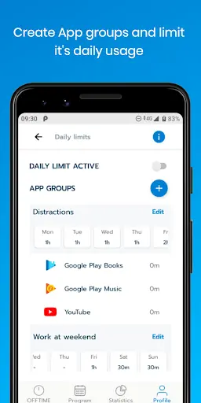
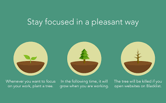

Digital Minimalism & Focus
Understanding Digital Minimalism
Digital minimalism is the practice of paring down your online and digital life to only the most essential tools and information. In a world saturated with constant notifications and an overwhelming amount of data, this approach offers a way to reclaim your focus and creativity by reducing digital clutter.
By embracing digital minimalism, you intentionally choose quality over quantity, keeping only the applications, websites, and digital interactions that truly serve your goals. The result? A clearer mind and more space for meaningful work and creativity.

Top Minimalist Apps & Tools
When it comes to a focused digital life, less is more. Consider these minimalist apps that encourage reduced screen time and more concentrated work:
-
Offtime: Temporarily disconnect from distractions by blocking calls, texts, and notifications.
 -
Flipd: This app locks your phone during designated periods, helping you stay away from unnecessary distractions.

-
Forest: Grow a virtual tree while you focus. If you exit the app, the tree dies—providing a creative incentive to stay focused.

Benefits of a Minimalist Approach
Embracing digital minimalism brings many benefits:
- Creates a quieter digital environment with fewer distractions.
- Clears mental clutter, allowing for enhanced creativity and focus.
- Improves overall productivity by limiting non-essential interactions.
- Fosters a more balanced lifestyle by prioritizing meaningful digital engagement.
"In a world dominated by constant notifications and endless feeds, embracing digital minimalism can be transformative. Tools like Forest help you cultivate a quieter digital environment, paving the way for deeper concentration and higher productivity."

Practical Implementation
Implementing digital minimalism is about making conscious choices. Try these strategies:
- Regularly review and declutter your apps and subscriptions.
- Configure your devices to limit notifications to only the essential.
- Establish tech-free zones or times—such as during meals or before bed.
- Practice periodic digital detoxes to reclaim your time and focus.
Inspirational Video: Embracing Digital Minimalism
Watch this inspirational video to see how digital minimalism can transform your approach to technology—helping you create a more focused, intentional lifestyle.
Daily Minimalism Checklist
Use this checklist to help maintain a minimalist digital lifestyle: